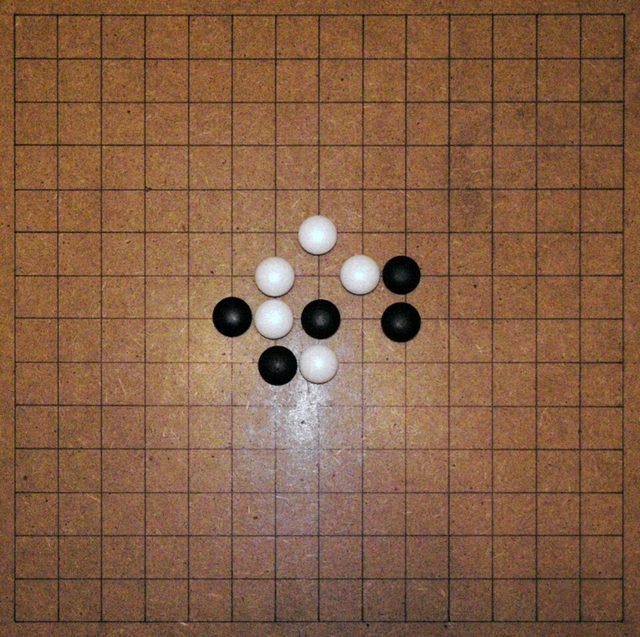

Home / Crossroads and Golden Ages / Japan and Korea
Encyclopedia ID 847
Gomoku and Renju
Also known as 五目並べ Gomoku · 連珠 Renju · Five in a row


Players alternate placing stones to get five in a row; Renju adds restrictions on the first player to keep balance.
Heritage note
Part of the living heritage of Japan.
Origins
Usually placed in the era of Crossroads and Golden Ages (about 500 to 1500), although its exact origins are uncertain, within the cultural world of Japan and Korea.
Play it
Sources
Related entries
Duo
Cote d'Ivoire · Board and table gamesShisima
Kenya · Board and table gamesFanoron-Telo
Madagascar · Board and table games

Riichi mahjong
Japan · Board and table games
More from Japan


Blacksmith's Forge
United Kingdom +4 · Crafts and making


Dougong Bracket Stacking
China +2 · Puzzles and mind games
Dumpling Pleating
China +2 · Crafts and making